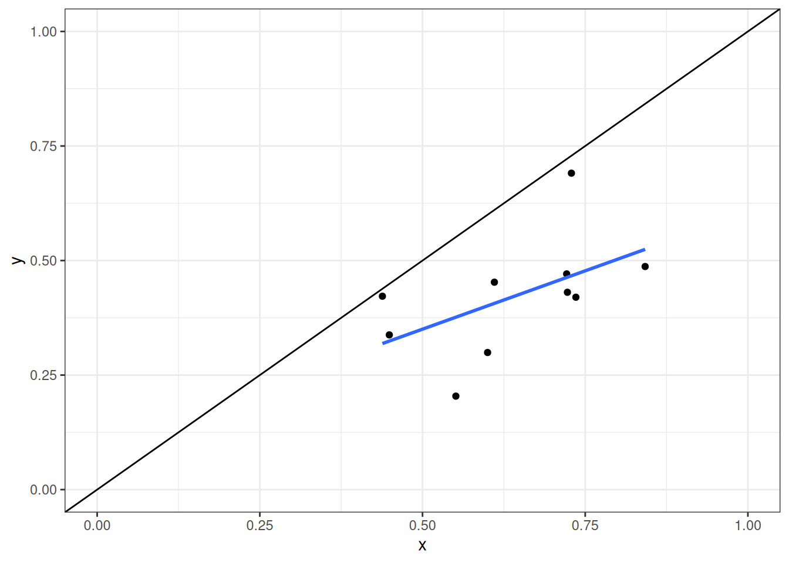

| County_1 | County_2 | County_3 |
| 60/40 | 60/40 | 60/40 |
| 40/60 | 40/60 | 40/60 |
| 40/60 | 40/60 | |
| 40/60 |
Manifold Destiny - or how to rig an election
Based upon the ideas developed by Edward K. Solomon
e– title: “Manifold Destiny - or how to rig an election” subtitle: “Based upon the ideas developed by Edward K. Solomon” format: revealjs: smaller: true toc-depth: 1 toc: true webr: show-startup-message: true # Disable displaying status of webR initialization packages: [‘dplyr’,‘purrr’,‘magrittr’,‘data.table’,‘tidyr’] # Install R packages on document open filters: - webr footer: https://lotariohw26.github.io/ManifoldDestiny/
Ed. Solomon
“At the very core of this article lay the assumption of Causality, that the Effect cannot precede the Cause; likewise, the Aggregate Percentage of a Candidate cannot precede the Election Day and the Mail-in Percentages of that candidate.
Setting up the election system
- Two candidates: A, B
- County with three precincts: 1, 2, 3
- Two modes of voting
- Number of ballots mode 1: S, T
- Number of ballots mode 2: U, V
| County_1 | County_2 | County_3 |
| 60/40 | 60/40 | 60/40 |
| 40/60 | 40/60 | 40/60 |
| 35/65 | 35/65 | |
| 30/70 |
Parametric tautologies in a election using standard form (north vs. south)
| S | T |
| V | U |
Parameters: ** \(x\), \(y\), \(\zeta\), \(\alpha\), \(\lambda\) ** \[\begin{equation*} x=\frac{S}{S + T} \text{, }y=\frac{U}{U + V} \end{equation*}\] \[\begin{equation*} \zeta=\frac{U + V}{S + T} \end{equation*}\] \[\begin{equation*} \alpha=\frac{S + U}{S + T + U + V}=\frac{x + y \zeta}{\zeta + 1} \end{equation*}\] \[\begin{equation*} \lambda=\frac{S + V}{S + T + U + V}=\frac{x + \zeta \left(1 - y\right)}{\zeta + 1} \end{equation*}\]
| P | S | T | U | V | x | y | zeta | alpha | lamda |
|---|---|---|---|---|---|---|---|---|---|
| 1 | 60 | 40 | 40 | 60 | 0.6 | 0.4 | 1 | 0.5 | 0.6 |
| 2 | 60 | 40 | 40 | 60 | 0.6 | 0.4 | 1 | 0.5 | 0.6 |
| 3 | 60 | 40 | 40 | 60 | 0.6 | 0.4 | 1 | 0.5 | 0.6 |
Numerical calculation of candidate one total percentage - Precinct 1 - \(\alpha=\frac{0.6+0.4\cdot 1}{1+1}=0.5\) - Precinct 2 - \(\alpha=\frac{0.6+0.4\cdot 1}{1+1}=0.5\) - Precinct 3 - \(\alpha=\frac{0.6+0.4\cdot 1}{1+1}=0.5\)
Parametric tautologies in a election using hybrid form (west vs. east)
| S | U |
| T | V |
Parameters: \(g\), \(h\), \(\Gamma\), \(\alpha\), \(\Omega\) \[\begin{equation*} g=\frac{S}{S + V} \text{, } h=\frac{U}{T + U} \end{equation*}\] \[\begin{equation*} \Gamma=\frac{T + U}{S + V} \end{equation*}\] \[\begin{equation*} \alpha=\frac{S + U}{S + T + U + V}=\frac{\Gamma h + g}{\Gamma + 1} \end{equation*}\] \[\begin{equation*} \Omega=\frac{S + T}{S + T + U + V}=\frac{\Gamma \left(1 - g\right) + g}{\Gamma + 1} \end{equation*}\]
| P | S | T | U | V | g | h | Gamma | alpha | Omega |
|---|---|---|---|---|---|---|---|---|---|
| 1 | 60 | 40 | 40 | 60 | 0.5 | 0.5 | 0.6667 | 0.5 | 0.5 |
| 2 | 60 | 40 | 40 | 60 | 0.5 | 0.5 | 0.6667 | 0.5 | 0.5 |
| 3 | 60 | 40 | 40 | 60 | 0.5 | 0.5 | 0.6667 | 0.5 | 0.5 |
Numerical calculation of candidate one total percentage - Precinct 1 - \(\alpha=\frac{0.5+0.4\cdot 0.67}{1+0.67}=0.5\) - Precinct 2 - \(\alpha=\frac{0.5+0.4\cdot 0.67}{1+0.67}=0.5\) - Precinct 3 - \(\alpha=\frac{0.5+0.4\cdot 0.67}{1+0.67}=0.5\)
| P | S | T | U | V | g | h | Gamma | alpha | Omega |
|---|---|---|---|---|---|---|---|---|---|
| 1 | 60 | 40 | 40 | 60 | 0.5000 | 0.5000 | 0.6667 | 0.500 | 0.5 |
| 2 | 60 | 40 | 35 | 65 | 0.4800 | 0.4667 | 0.6000 | 0.475 | 0.5 |
| 3 | 60 | 40 | 30 | 70 | 0.4615 | 0.4286 | 0.5385 | 0.450 | 0.5 |
Parametric tautologies in a election using opposition form (upper diagonal vs. lower diagonal)
| S | U |
| T | V |
Parameters: \(m\), \(n\), \(\xi\), \(\lambda\), \(\Omega\) \[\begin{equation*} n=\frac{S}{S + U} \text{ , } m=\frac{T}{T + V} \end{equation*}\] \[\begin{equation*} \xi=\frac{T + V}{S + U} \end{equation*}\] \[\begin{equation*} \Omega=\frac{S + T}{S + T + U + V}=\frac{m + n \xi}{\xi + 1} \end{equation*}\] \[\begin{equation*} \lambda=\frac{S + V}{S + T + U + V}=- \Omega + \frac{2 m + \xi}{\xi + 1} \end{equation*}\]
| P | S | T | U | V | n | m | xi | Omega | lamda |
|---|---|---|---|---|---|---|---|---|---|
| 1 | 60 | 40 | 40 | 60 | 0.6 | 0.4 | 1 | 0.5 | 0.6 |
| 2 | 60 | 40 | 40 | 60 | 0.6 | 0.4 | 1 | 0.5 | 0.6 |
| 3 | 60 | 40 | 40 | 60 | 0.6 | 0.4 | 1 | 0.5 | 0.6 |
Modelling the election process
- Step 1: Each registered voter assign themself (independent of voting technology) to either candidate A or candidate B
- Step 2: Voting technology realized
- Step 3: Registered voters determine whether to vote or not to vote
- Step 4: If voting, do this by either mode 1 or by mode 2.
flowchart LR A[Candidate A or B] --> R[A] R --> RV[Vote] RV --> RVE[Non-Mail] RV --> RVM[Mail] R --> RN[Not Vote] DV --> DVE[Non-Mail] DV --> DVM[Mail] A --> D[B] D --> DV[Vote] D --> Dn[Not Vote]
- Probability of assigning oneself to candidate A in precinct \(i\)
- \(p_{w,i} \sim N(\alpha_i,\sigma^2_{w,i})\)
- Voting technology
- \(z_i \sim U(0,1)\)
- Probability of not voting in precinct \(i\)
- Candidate A, \(p_{nz,a,i}=(1-z_i)p_{n,a,i}\sim N(\alpha_{a,n},\sigma^2_{a,n})\)
- Candidate B, \(p_{nz,b,i}=(1-z_i)p_{n,b,i}\sim N(\alpha_{b,n},\sigma^2_{b,n})\)
- Candidate A, \(p_{nz,a,i}=(1-z_i)p_{n,a,i}\sim N(\alpha_{a,n},\sigma^2_{a,n})\)
- Probability of voting by mode 2 in precinct \(i\)
- Candidate A, \(p_{m2,a,i}=(1-p_{nv,a,i})p_{a,mv}\sim N(\alpha_{a,mv},\sigma^2_{a,mv})\)
- Candidate B, \(p_{m2,b,i}=(1-p_{nv,b,i})p_{b,mv}\sim N(\alpha_{a,mv},\sigma^2_{a,mv})\)
- Probability of voting by mode 1 in precinct \(i\)
- Candidate A, \(p_{m1,a,i}=1-p_{m2,a,i}-p_{nz,a,i}\)
- Candidate B, \(p_{m1,b,i}=1-p_{m2,b,i}-p_{nz,b,i}\)
Neutral-voting assumption:
- Decission to vote or not to vote is independent of voting preferences:
- \(p_{nz,a,i}=p_{nz,a,i}\)
- If voting, decission to vote by mode 1 or by mode 2 independent of voting preferences:
- \(p_{m2,a,i}=p_{m2,a,i}\)
Note: As we will investigate later, this condition might be needed in order to restore a rigged election to its original form.
How exogenous factors that influence the voting system will make changes to the election outcome through \(\zeta_i\)
- Differences in the cost of voting (e.g., topology, voting rules, dropboxes etc.) across precincts \(\Rightarrow\)
- Changes to the likelihood of voting \(\Rightarrow\)
- Simplify so that changes in the likelihood of voting only impact Mode 2 \(\Rightarrow\)
- Higher \(\zeta_i\) \(\Rightarrow\)
- Which changes the total election outcome through \(\alpha_i=\frac{x_i+\zeta_i y_i}{\zeta_i+x_i}\)
The impact on the election outcome, however, would be small or close to non-existens if the conditions of the existance of a trivial Manifold occuranse related to normal form are not satisfied:
- Proportion of mail-in-votes to election day vote is already high (Aggregate convergence lemma)
- Note: \(\lim_{\zeta_i \rightarrow \infty} \alpha_i=\frac{x_i+\zeta_i y_i}{\zeta_i+x_i}=y_i\)
- Correlation between \(x\) and \(y\) is very high (Twixt lemma)
- Note: If correlation is 1, we can set \(x_i=\rho_s y_i\) so that \(\alpha_i(y_i,\zeta_i)=\frac{\rho_s y_i+\zeta_i y_i}{\zeta_i+x_i}\)
- Low variance to \(\zeta\)
- Note: Invariance across precincts would imply that \(\zeta_i=\zeta\), so that election outcome only determined by variations in two parameters: \(\alpha_i(y_i,x_i)=\frac{x_i+\zeta y_i}{\zeta+x_i}\)
If none of this three cases are satisfied, variation in \(\zeta_i\) should explain part of the election result. But how much should we expect within a county (2%, 5%, 10%)?
How exogenous factors that influence the voting system will make changes to the election outcome through \(\Gamma_i\)
- Differenc in the cost of voting (e.g., topology, voting rules, dropboxes, socio economics etc.) across precincts \(\Rightarrow\)
- Make changes to the likelihood of voting \(\Rightarrow\)
- Simplify so that changes in the likelihood of voting only impact mode 2 \(\Rightarrow\)
- Higher \(\zeta_i\) \(\Rightarrow\)
- If new and earlier sample not representative of each other, higher \(\Gamma_i\) \(\Rightarrow\)
- Which changes the total election outcome through \(\alpha_i=\frac{g_i+\zeta_i h_i}{\zeta_i+1}\)
The impact on the election outcome, however, would be small or close to non-existens if the conditions of the existance of a trivial Manifold related to opposition form are not satisfied:
- Proportion of the hybrid ballot boxes is already high (Aggregate convergence lemma)
- Note: \(\lim_{\Gamma_i \rightarrow \infty} \alpha_i=\frac{g_i+\zeta_i h_i}{\zeta_i+g_i}=y_i\)
- Correlation between \(g\) and \(h\) is very high (Twixt lemma)
- Note: If correlation is 1, we can set \(g_i=\rho_h h_i\) so that \(\alpha_i(h_i,\Gamma_i)=\frac{\rho_h h_i+\Gamma_i h_i}{\Gamma_i+x_i}\)
- Low variance to \(\Gamma_i\)
- Note: Invariance across precincts would imply that \(\Gamma_i=\Gamma\), so that election outcome only determined by variations in two parameters: \(\alpha_i=\frac{g_i+\Gamma h_i}{h_i}\)
If none of this three cases are satisfied, variation in \(\Gamma_i\) should explain part of the election result. But how much should we expect within a county (2%, 5%, 10%)?
Overview of various methods of ballot counting
Generic approach to ballot counting
- We have identified three ways of counting
- Standard form ( \(x\), \(y\), \(\zeta\), \(\alpha\), \(\lambda\) )
- Hybrid form ( \(g\), \(h\), \(\alpha\), \(\Gamma\), \(\Omega\) )
- Opposition form ( \(n\), \(m\), \(\xi\), \(\Omega\), \(\lambda\) )
- Each form can (throught its parametric tautologies) determine the 5 parameters that have been listed.
- We are free to predetermine 3 of them
- The remaining 2 must be backsolved, this based on information from the first three parameters.
- Selecting 3 parameters from a set of 5 implies 10 different combinations
Definitions (20 laws and 40 isometries)
20 laws and 40 isometris
| Law_Number | North_vs_South | West_vs_East | Diagonal_vs_Diagonal |
|---|---|---|---|
| First Law | \(x_{1}=\alpha_{1}+\zeta(\alpha_{1}-y_{1})\) | \(g_{1}=\alpha_{1}+\gamma(\alpha_{1}-h_{1})\) | \(m_{1}=\Omega_{1}+\xi(\Omega_{1}-n_{1})\) |
| Second Law | \(x_{1}=\lambda_{1}+\zeta(\lambda_{1}-y_{2})\) | \(g_{1}=\Omega_{1}+\gamma(\Omega_{1}-h_{2})\) | \(m_{1}=\lambda_{1}+\xi(\lambda_{1}-n_{2})\) |
| Third Law | \(x_{1}=\frac{\alpha_{1}y_{2}-\lambda_{1}y_{1}}{(\alpha_{1}-\lambda_{1})-(y_{1}-y_{2})}\) | \(g_{1}=\frac{\alpha_{1}h_{2}-\Omega_{1}h_{1}}{(\alpha_{1}-\Omega_{1})-(h_{1}-h_{2})}\) | \(m_{1}=\frac{\Omega_{1}n_{2}-\lambda_{1}n_{1}}{(\Omega_{1}-\lambda_{1})-(n_{1}-n_{2})}\) |
| Fourth Law | \(x_{1}=\frac{\lambda_{1}+\alpha_{1}-\Omega_{2}}{2\Omega_{1}}\) | \(g_{1}=\frac{\Omega_{1}+\alpha_{1}-\lambda_{2}}{2\lambda_{1}}\) | \(m_{1}=\frac{\lambda_{1}+\Omega_{1}-\alpha_{2}}{2\alpha_{1}}\) |
| Fifth Law | \(y_{1}=\alpha_{1}-\zeta^{-1}(\alpha_{1}-x_{1})\) | \(h_{1}=\alpha_{1}-\gamma^{-1}(\alpha_{1}-g_{1})\) | \(n_{1}=\Omega_{1}-\xi^{-1}(\Omega_{1}-m_{1})\) |
| Sixth Law | \(y_{1}=\lambda_{2}-\zeta^{-1}(\lambda_{1}-x_{1})\) | \(h_{1}=\Omega_{2}-\gamma^{-1}(\Omega_{1}-g_{1})\) | \(n_{1}=\lambda_{2}-\xi^{-1}(\lambda_{1}-m_{1})\) |
| Seventh Law | \(y_{1}=\frac{x_{1}\lambda_{2}-x_{2}\alpha_{1}}{(\lambda_{2}-\alpha_{1})-(x_{2}-x_{1})}\) | \(h_{1}=\frac{g_{1}\Omega_{2}-g_{2}\alpha_{1}}{(\Omega_{2}-\alpha_{1})-(g_{2}-g_{1})}\) | \(n_{1}=\frac{m_{1}\lambda_{2}-m_{2}\Omega_{1}}{(\lambda_{2}-\Omega_{1})-(m_{2}-m_{1})}\) |
| Eighth Law | \(y_{1}=\frac{\lambda_{2}+\alpha_{1}-\Omega_{1}}{2\Omega_{2}}\) | \(h_{1}=\frac{\Omega_{2}+\alpha_{1}-\lambda_{1}}{2\lambda_{2}}\) | \(n_{1}=\frac{\lambda_{2}+\Omega_{1}-\alpha_{1}}{2\alpha_{2}}\) |
| Ninth Law | \(\alpha_{1}=x_{1}\Omega_{1}+\Omega_{2}y_{1}\) | \(\alpha_{1}=g_{1}\lambda_{1}+\lambda_{2}h_{1}\) | \(\Omega_{1}=m_{1}\alpha_{1}+\alpha_{2}n_{1}\) |
| Tenth Law | \(\alpha_{1}=\Omega_{1}(x_{1}-x_{2})+\lambda_{2}\) | \(\alpha_{1}=\lambda_{1}(g_{1}-g_{2})+\Omega_{2}\) | \(\Omega_{1}=\alpha_{1}(m_{1}-m_{2})+\lambda_{2}\) |
| Eleventh Law | \(\alpha_{1}=\Omega_{2}(y_{1}-y_{2})+\lambda_{1}\) | \(\alpha_{1}=\lambda_{2}(h_{1}-h_{2})+\Omega_{1}\) | \(\Omega_{1}=\alpha_{2}(n_{1}-n_{2})+\lambda_{1}\) |
| Twelfth Law | \(\alpha_{1}=\frac{x_{1}(y_{2}-y_{1})-\lambda_{1}(x_{1}-y_{1})}{y_{2}-x_{1}}\) | \(\alpha_{1}=\frac{g_{1}(h_{2}-h_{1})-\Omega_{1}(g_{1}-h_{1})}{h_{2}-g_{1}}\) | \(\Omega_{1}=\frac{m_{1}(n_{2}-n_{1})-\lambda_{1}(m_{1}-n_{1})}{n_{2}-m_{1}}\) |
| Thirteenth Law | \(\lambda_{1}=x_{1}\Omega_{1}+\Omega_{2}y_{2}\) | \(\Omega_{1}=g_{1}\lambda_{1}+\lambda_{2}h_{2}\) | \(\lambda_{1}=m_{1}\alpha_{1}+\alpha_{2}n_{2}\) |
| Fourteenth Law | \(\lambda_{1}=\Omega_{1}(x_{1}-x_{2})+\alpha_{2}\) | \(\Omega_{1}=\lambda_{1}(g_{1}-g_{2})+\alpha_{2}\) | \(\lambda_{1}=\alpha_{1}(m_{1}-m_{2})+\Omega_{2}\) |
| Fifteenth Law | \(\lambda_{1}=\frac{\alpha_{1}(x_{1}-y_{2})-x_{1}(y_{1}-y_{2})}{x_{1}-y_{1}}\) | \(\Omega_{1}=\frac{\alpha_{1}(g_{1}-h_{2})-g_{1}(h_{1}-h_{2})}{g_{1}-h_{1}}\) | \(\lambda_{1}=\frac{\Omega_{1}(m_{1}-n_{2})-m_{1}(n_{1}-n_{2})}{m_{1}-n_{1}}\) |
| Sixteenth Law | \(\lambda_{1}=\Omega_{2}(y_{2}-y_{1})+\alpha_{1}\) | \(\Omega_{1}=\lambda_{2}(h_{2}-h_{1})+\alpha_{1}\) | \(\lambda_{1}=\alpha_{2}(n_{2}-n_{1})+\Omega_{1}\) |
| Seventeenth Law | \(\zeta=\frac{x_{1}-\alpha_{1}}{\alpha_{1}-y_{1}};\Omega_{1}=\frac{y_{1}-\alpha_{1}}{y_{1}-x_{1}}\) | \(\gamma=\frac{g_{1}-\alpha_{1}}{\alpha_{1}-h_{1}};\lambda_{1}=\frac{h_{1}-\alpha_{1}}{h_{1}-g_{1}}\) | \(\xi=\frac{m_{1}-\Omega_{1}}{\Omega_{1}-n_{1}};\alpha_{1}=\frac{n_{1}-\Omega_{1}}{n_{1}-m_{1}}\) |
| Eighteenth Law | \(\Omega_{1}=\frac{\lambda_{2}-\alpha_{1}}{x_{2}-x_{1}}=\frac{\alpha_{2}-\lambda_{1}}{x_{2}-x_{1}}\) | \(\gamma_{1}=\frac{\Omega_{2}-\alpha_{1}}{g_{2}-g_{1}}=\frac{\alpha_{2}-\Omega_{1}}{g_{2}-g_{1}}\) | \(\alpha_{1}=\frac{\lambda_{2}-\Omega_{1}}{m_{2}-m_{1}}=\frac{\Omega_{2}-\lambda_{1}}{m_{2}-m_{1}}\) |
| Nineteenth Law | \(\zeta=\frac{x_{1}-\lambda_{1}}{\lambda_{1}-y_{2}}; \Omega_{1}=\frac{y_{2}-\lambda_{1}}{y_{2}-x_{1}}\) | \(\gamma=\frac{g_{1}-\Omega_{1}}{\Omega_{1}-h_{2}}; \lambda_{1}=\frac{h_{2}-\Omega_{1}}{h_{2}-g_{1}}\) | \(\xi=\frac{m_{1}-\lambda_{1}}{\lambda_{1}-n_{2}}; \alpha_{1}=\frac{n_{2}-\lambda_{1}}{n_{2}-m_{1}}\) |
| Twentieth Law | \(\zeta=\frac{\lambda_{1}-\alpha_{1}}{(y_{2}-y_{1})+(\alpha_{1}-\lambda_{1})}\) | \(\gamma=\frac{\Omega_{1}-\alpha_{1}}{(h_{2}-h_{1})+(\alpha_{1}-\Omega_{1})}\) | \(\xi=\frac{\lambda_{1}-\Omega_{1}}{(n_{2}-n_{1})+(\Omega_{1}-\lambda_{1})}\) |
Proportions
| V1 | V2 | V3 | V4 |
|---|---|---|---|
| North Ratio | South Ratio | North Complement | South Complement |
| \(x_{1} = \frac{s}{s+t}\) | \(y_{1} = \frac{u}{u+v}\) | \(x_{2} = (1-x_{1}) = \frac{t}{s+t}\) | \(y_{2} = (1-y_{1}) = \frac{v}{u+v}\) |
| West Ratio | East Ratio | West Complement | East Complement |
| \(g_{1} = \frac{s}{s+v}\) | \(h_{1} = \frac{u}{u+t}\) | \(g_{2} = (1-g_{1}) = \frac{v}{s+v}\) | \(h_{2} = (1-h_{1}) = \frac{t}{u+t}\) |
| Northwest Ratio | Northeast Ratio | Southeast Ratio | Southwest Ratio |
| \(m_{1} = \frac{s}{s+u}\) | \(n_{1} = \frac{t}{t+v}\) | \(m_{2} = (1-m_{1}) = \frac{u}{s+u}\) | \(n_{2} = (1-n_{1}) = \frac{v}{t+v}\) |
| Diagonal Aggregate | Diagonal Proportion | 1st Alpha Identity | Xi Identity |
| \(\alpha_{1} = \frac{s+u}{(s+u)+(t+v)}\) | \(\xi = \frac{t+v}{s+u}\) | \(\alpha_{1} = (\xi+1)^{-1}\) | \(\xi = \frac{1-\alpha_{1}}{\alpha_{1}} = \frac{\alpha_{2}}{\alpha_{1}}\) |
| Diagonal Complement | Diagonal Inverse | 2nd Alpha Identity | Inverse Xi Identity |
| \(\alpha_{2} = \frac{t+v}{(s+u)+(t+v)}\) | \(\xi^{-1} = \frac{s+u}{t+v}\) | \(\alpha_{2} = (\xi^{-1}+1)^{-1}\) | \(\xi^{-1} = \frac{1-\alpha_{2}}{\alpha_{2}} = \frac{\alpha_{1}}{\alpha_{2}}\) |
| West Aggregate | East to West Proportion | 1st Lambda Identity | Gamma Identity |
| \(\lambda_{1} = \frac{s+v}{(s+v)+(u+t)}\) | \(\gamma = \frac{u+t}{s+v}\) | \(\lambda_{1} = (\gamma+1)^{-1}\) | \(\gamma = \frac{1-\lambda_{1}}{\lambda_{1}} = \frac{\lambda_{2}}{\lambda_{1}}\) |
| East Aggregate | West to East Proportion | 2nd Lambda Identity | Inverse Gamma Identity |
| \(\lambda_{2} = \frac{u+t}{(s+v)+(u+t)}\) | \(\gamma^{-1} = \frac{s+v}{u+t}\) | \(\lambda_{2} = (\gamma^{-1}+1)^{-1}\) | \(\gamma^{-1} = \frac{1-\lambda_{2}}{\lambda_{2}} = \frac{\lambda_{1}}{\lambda_{2}}\) |
| North Aggregate | South to North Proportion | 1st Omega Identity | Zeta Identity |
| \(\Omega_{1} = \frac{s+t}{(s+t)+(u+v)}\) | \(\zeta = \frac{u+v}{s+t}\) | \(\Omega_{1} = (\zeta+1)^{-1}\) | \(\zeta = \frac{1-\Omega_{1}}{\Omega_{1}} = \frac{\Omega_{2}}{\Omega_{1}}\) |
| South Aggregate | North to South Proportion | 2nd Omega Identity | Inverse Zeta Identity |
| \(\Omega_{2} = \frac{u+v}{(s+t)+(u+v)}\) | \(\zeta^{-1} = \frac{s+t}{u+v}\) | \(\Omega_{2} = (\zeta^{-1}+1)^{-1}\) | \(\zeta^{-1} = \frac{1-\Omega_{2}}{\Omega_{2}} = \frac{\Omega_{1}}{\Omega_{2}}\) |
[@delfino2011analysis]
Counting in a fair election
Counting in a rigged election
The use of a loss-function and the practical limitations of such an algorithm
Election simulations
Fair election
| variable | mean | std |
|---|---|---|
| S | 262.5000000 | 63.1105732 |
| T | 124.0000000 | 61.7161963 |
| U | 186.3000000 | 69.0491773 |
| V | 237.4000000 | 130.6319682 |
| R | 1003.4000000 | 23.4056024 |
| Z | 810.2000000 | 211.4394056 |
| x | 0.6820674 | 0.1448196 |
| y | 0.4597209 | 0.1139065 |
| zeta | 1.0806824 | 0.3286717 |
| alpha | 0.5678039 | 0.1253779 |
| lamda | 0.6179651 | 0.0764877 |
| g | 0.5458470 | 0.1351588 |
| h | 0.6101040 | 0.1342796 |
| Gamma | 0.6421970 | 0.2163840 |
| Omega | 0.4907062 | 0.0718266 |
| m | 0.3487821 | 0.1062103 |
| n | 0.5899505 | 0.0739361 |
| xi | 0.8644615 | 0.5417476 |
`geom_smooth()` using formula = 'y ~ x'
Warning: Removed 5 rows containing missing values (`geom_line()`).Warning: Removed 5 rows containing missing values (`geom_point()`).
[[1]]
Call:
lm(formula = formo, data = edfc)
Residuals:
Min 1Q Median 3Q Max
-0.036256 -0.011009 -0.000102 0.012177 0.031714
Coefficients:
Estimate Std. Error t value Pr(>|t|)
(Intercept) -0.06948 0.03782 -1.837 0.109
x 0.50235 0.05537 9.072 0.0000405 ***
y 0.64092 0.07040 9.104 0.0000396 ***
---
Signif. codes: 0 '***' 0.001 '**' 0.01 '*' 0.05 '.' 0.1 ' ' 1
Residual standard error: 0.02153 on 7 degrees of freedom
Multiple R-squared: 0.9771, Adjusted R-squared: 0.9705
F-statistic: 149 on 2 and 7 DF, p-value: 0.000001829